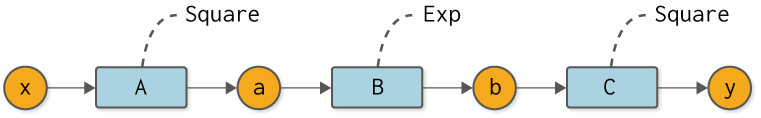
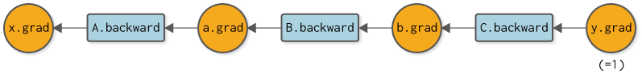

前ステップまでに実装したコード
[1]:
import numpy as np
class Variable:
def __init__(self, data):
self.data = data
class Function:
def __call__(self, input):
x = input.data
y = self.forward(x)
output = Variable(y)
self.input = input
self.output = output
return output
def forward(self, x):
raise NotImplementedError()
class Square(Function):
def forward(self, x):
return x ** 2
class Exp(Function):
def forward(self, x):
return np.exp(x)
def numerical_diff(f, x, eps=1e-4):
x0 = Variable(x.data - eps)
x1 = Variable(x.data + eps)
y0 = f(x0)
y1 = f(x1)
return (y1.data - y0.data) / (2 * eps)
ステップ6 手作業によるバックプロパゲーション¶
前ステップでは、バックプロパゲーションの仕組みについて説明しました。本ステップでは、これまでのVariableとFunctionクラスを拡張して、バックプロパゲーションを用いて微分を求められるように実装していきます。まずは、Variableクラスから見ていきます。
6.1 Variableクラスの追加実装¶
それでは、バックプロパゲーションに対応したVariableクラスを実装します。そのためには、通常の値（data）に加えて、それに対応する微分した値（grad）を持つように拡張します。
[2]:
class Variable:
def __init__(self, data):
self.data = data
self.grad = None # 追加したコード
上記のように、新たにgradというインスタンス変数を持つようにします。インスタンス変数のdataとgradは、ともにNumPyの多次元配列（ndarray）であることを想定します。また、gradはNoneで初期化し、逆伝播によって実際に微分が計算されたときに、その値を設定します。
WARNING
ベクトルや行列など、多変数に関する微分は勾配（gradient）と呼びます。そのためVariableクラスは、gradientを略したgradという変数を持つようにします。
6.2 Functionクラスの追加実装¶
続いて、Functionクラスです。ここまでのステップでは、Functionクラスは通常の計算を行う順伝播（forwardメソッド）の機能を持っていました。これに加え、次の2つの機能を新たに追加します。
微分の計算を行う逆伝播の機能（
backwardメソッド）forwardメソッドを呼ぶ際に、入力されたVariableインスタンスを保持する機能
この2点を実装したのが、次のコードです。
[3]:
class Function:
def __call__(self, input):
x = input.data
y = self.forward(x)
output = Variable(y)
self.input = input # 追加したコード
return output
def forward(self, x):
raise NotImplementedError()
def backward(self, gy): # 追加したコード
raise NotImplementedError() # 追加したコード
上のコードで示すとおり、__call__メソッドで、入力されたinputをインスタンス変数に設定します。これで、backwardメソッドが呼ばれるときに、関数に入力したVariableインスタンスをself.inputとして使うことができます。
6.3 SquareとExpクラスの追加実装¶
続いて、具体的な関数の逆伝播（backward）を実装します。まずは、2乗の計算を行うSquareクラスからです。これは、\(y=x^2\)の微分が\(\frac{dy}{dx} = 2x\)となることから、次のように実装できます。
[4]:
class Square(Function):
def forward(self, x):
y = x ** 2
return y
def backward(self, gy):
x = self.input.data
gx = 2 * x * gy
return gx
上記のように、逆伝播のためのbackwardメソッドを追加します。このメソッドの引数gyはndarrayインスタンスであり、出力側から伝わる微分が渡されます。その引数で渡された微分と「\(y=x^2\)の微分」を掛け算した値をbackwardメソッドの結果として返します。その返された結果が、さらに入力方向へと伝播していくことになります。
続いて、\(y=e^x\)の計算を行うExpクラスです。これは、\(\frac{dy}{dx} = e^x\)であるため、次のように実装できます。
[5]:
class Exp(Function):
def forward(self, x):
y = np.exp(x)
return y
def backward(self, gy):
x = self.input.data
gx = np.exp(x) * gy
return gx
6.4 バックプロパゲーションの実装¶
以上で準備は整いました。ここでは、図6-1で表される計算に対して、その微分をバックプロパゲーションで求めてみます。

図6-1 バックプロパゲーションを行う対象の合成関数
まずは、図6-1の順伝播のコードを次に示します。
[6]:
A = Square()
B = Exp()
C = Square()
x = Variable(np.array(0.5))
a = A(x)
b = B(a)
y = C(b)
続いて、逆伝播によってyの微分を求めます。それには順伝播とは逆の順番で各関数のbackwardメソッドを呼びます。このとき行う逆伝播を計算グラフで表すと、図6-2のようになります。

図6-2 逆伝播の計算グラフ
図6-2を見れば、どの順番で、どの関数のbackwardメソッドを呼べばよいかが分かります。またbackwardメソッドの結果を、どの変数のgradに設定すればよいかも分かります。それでは、逆伝播の実装を次に示します。
[7]:
y.grad = np.array(1.0)
b.grad = C.backward(y.grad)
a.grad = B.backward(b.grad)
x.grad = A.backward(a.grad)
print(x.grad)
3.297442541400256
逆伝播は、\(\frac{dy}{dy} = 1\)からスタートします。そのため、出力yの微分をnp.array(1.0)に設定します。後は、C → B → Aの順でbackwardメソッドを呼ぶだけです。これで各変数に対して微分が求まります。
上のコードを実行すると、x.gradの結果は3.297442541400256となります。これはyのxに関する微分です。ちなみに、図6-2の数値微分のときの結果は3.2974426293330694だったので、その2つの結果はほとんど同じであることが分かります。このことから、バックプロパゲーションが正しく実装できていること――より正確には、高い確率で正しく実装できていることが推測されます。
以上が、バックプロパゲーションの実装です。正しく実行することはできましたが、私たちは手作業によって――つまり、私たちがコーディングすることによって――C → B → Aという逆伝播の順番を指定しました。次のステップでは、この手作業を自動化します。